Chapter 5 회귀분석
5.1 상관분석
5.1.1 상관계수
상관분석(correlation analysis)은 서로 관련된다고 예측되는 두 개의 수치형 변수들에 대해 선형적으로 얼마나 연관성이 있는지 알아보는 분석 방법
한 변수의 값이 증가할 때 다른 변수의 값도 증가하는 경향이 있는 경우에는 두 변수가 양의 상관관계가 있다고 하고, 한 변수의 값이 증가할 때 다른 변수의 값이 감소하는 경향이 있는 경우에는 두 변수가 음의 상관관계가 있다고 함
상관분석에 사용되는 변수의 척도는 원칙적으로 수치형이어야 함. 그러나 순서형 변수라 하더라도 각 범주들의 간격이 등간격이라고 볼 수 있거나, 몇 개의 순서형 변수들의 합으로 만들어진 변수는 상관분석이 가능
상관관계의 크기는 상관계수(correlation coefficient)로 표현
산점도(scatter plot)는 두 변수 \(X\)와 \(Y\)의 쌍으로 된 값 \((x_1,y_1), \cdots, (x_n ,y_n)\)을 \(X, Y\) 좌표평면위에 점으로 표시한 그림이며, 두 변수간 상관관계를 살펴보기에 적합
\(X\)와 \(Y\)의 산점도
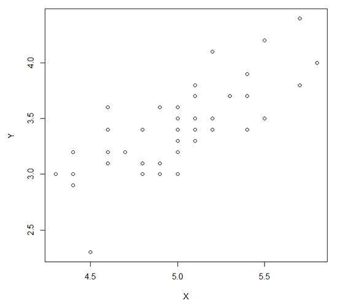
이변량 상관계수(bivariate correlation coefficient)는 두 변수 간에 존재하는 상관계수를 의미
상관계수는 \(-1\)과 \(1\) 사이의 수치로 나타내며, 두 변수 사이의 관련성 중에서 직선관계의 정도만을 나타내기 때문에 두 변수 사이의 이차함수 관계이거나 또는 직선이 아닌 다른 관계가 존재하면 상관계수는 \(0\)의 값으로 나타남
상관계수에 따른 산점도
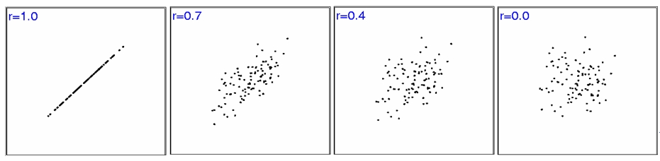
일반적으로 상관계수는 피어슨 상관계수(Pearson correlation coefficient)를 의미
대표본이거나 각 변수의 모집단 분포가 정규분포에 가깝다고 판단되는 경우에 피어슨 상관계수를 사용하며, 소표본이면서 정규성 가정을 하기가 어려우면 스피어만(Spearman) 순위상관계수 혹은 켄달의 타우(Kendall’s tau)를 사용
피어슨 상관계수 \[\rho=\frac{\sigma_{XY}}{\sqrt{\sigma_X^2}\sqrt{\sigma_Y^2}}=\frac{\sigma_{XY}}{\sigma_X\sigma_Y}, \hskip3pt -1 \le \rho \le 1\]
표본상관계수 \[r=\frac{S_{XY}}{\sqrt{S_X^2}\sqrt{S_Y^2}}=\frac{S_{XY}}{S_XS_Y}, \hskip3pt -1 \le r \le 1\]
여기서 \(S_X^2=\frac{1}{n-1}\sum_{i=1}^n(x_i-\bar{x})^2\), \(S_Y^2=\frac{1}{n-1}\sum_{i=1}^n(y_i-\bar{y})^2\), \(S_{XY}=\frac{1}{n-1}\sum_{i=1}^n(x_i-\bar{x})(y_i-\bar{y})\)
가설
\(H_0 : \rho=0\) (두 변수간 상관관계가 없다)
\(H_1 : \rho\ne 0\) (두 변수간 상관관계가 있다) 또는 \(\rho >0\) 또는 \(\rho <0\)
검정통계량 \[T=\frac{r}{\sqrt{\frac{1-r^2}{n-2}}} \sim t(n-2)\]
기각역(양측) \[|T| > t_{\alpha/2,n-2 }\]
기각역(단측) \[T > t_{\alpha,n-2 } \quad \text{또는} \quad T < -t_{\alpha,n-2 }\]
예제) 다음은 \(322\)명의 건강한 성인의 건강검진 자료이다. 자료에는 나이, 키, 몸무게, 허리둘레, BMI, 수축기 혈압 등의 정보가 담겨져 있다.허리둘레와 BMI의 산점도를 그리고 상관관계를 분석하라.
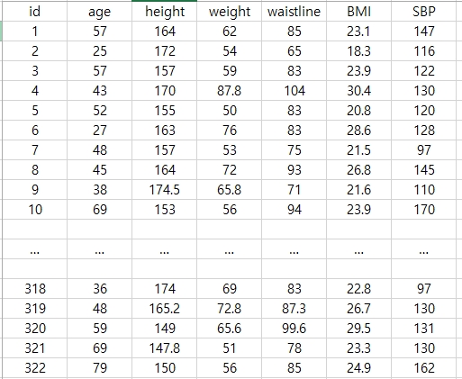
5.1.1.1 With R
- 데이터 입력
#reg_data <- read.csv("https://elflini.github.io/study/statanal/data/5.%20correlation_and_regression.csv", header=T)
exdata <- url("https://elflini.github.io/study/statanal/data/reg_data.rda")
load(file=exdata)
head(reg_data)## age height weight waistline BMI SBP
## 1 57 164 62.0 85 23.1 147
## 2 25 172 54.0 65 18.3 116
## 3 57 157 59.0 83 23.9 122
## 4 43 170 87.8 104 30.4 130
## 5 52 155 50.0 83 20.8 120
## 6 27 163 76.0 83 28.6 128- Scatterplot matrix
pairs(reg_data)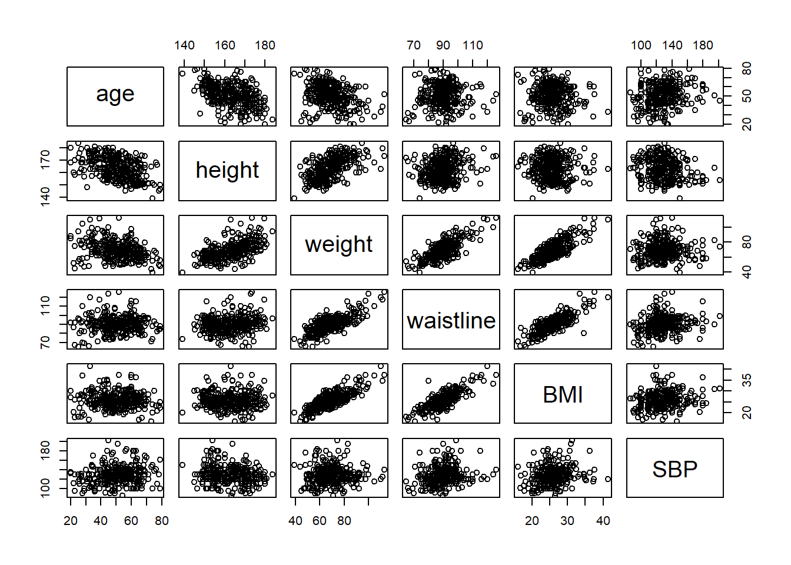
- 상관분석
cor.test(~waistline+BMI, data=reg_data)##
## Pearson's product-moment correlation
##
## data: waistline and BMI
## t = 23.906, df = 320, p-value < 2.2e-16
## alternative hypothesis: true correlation is not equal to 0
## 95 percent confidence interval:
## 0.7576655 0.8367351
## sample estimates:
## cor
## 0.80066결과를 살펴보면, 표본 상관계수는 0.80066으로 양의 상관관계가 높게 나타나며, P-valuesms <.0001로 매우 유의하게 나타나는 것을 알 수 있다.
5.1.1.2 With SAS
SAS Code
filename reg_data URL "https://elflini.github.io/study/statanal/data/5.%20correlation_and_regression.csv" termstr=crlf;
proc import out=healthdata
datafile=reg_data
dbms=csv replace;
getnames=yes;
run;
proc sgscatter data=healthdata;
title "Scatterplot Matrix";
matrix age height weight waistline bmi sbp;
run;
proc corr data=healthdata plots=matrix;
var waistline bmi;
run;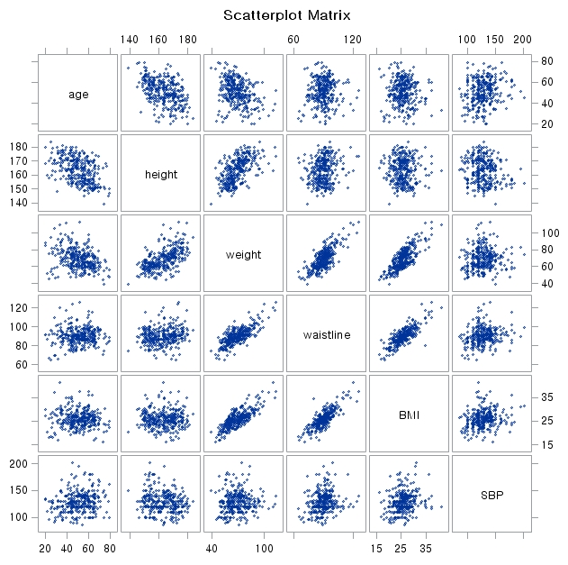

5.1.2 스피어만 상관계수
소표본이거나 정규성 가정을 하기 어려운 경우, 특히 모집단의 분포가 대칭분포가 아니거나 대칭분포이지만 꼬리가 두터운 분포(상대적으로 아주 큰 값이나 작은 값이 \(1\%\)이상 존재하는 경우)인 경우에는 비모수적 방법인 스피어만 순위상관계수(Spearman rank correlation coefficient) 사용
두 변수 각각의 값이 \((x_1,y_1), \cdots, (x_n, y_n)\)일 때 \(R=(r_1, \ldots, r_n)\)을 \((x_1, \ldots, x_n)\)의 순위, \(S=(s_1,\ldots, s_n)\)을 \((y_1, \ldots, y_n)\)의 순위라 하자.
가설
\(H_0\): 두 변수 \(X\)와 \(Y\)는 독립이다.
\(H_1\): 두 변수 \(X\)와 \(Y\)는 독립이 아니다.(상관관계가 있다)
검정통계량 \[r=\frac{S_{rs}}{S_rS_s}\]
여기서 \(S_{rs}\)는 \(R\)과 \(S\)의 공분산, \(S_r\)과 \(S_s\)는 각각 \(R\)과 \(S\)의 표준편차임
만약 중복순위가 존재하지 않는다면 검정통계량은 \[r=1-\frac{6\sum_{i=1}^n(R_i-S_i)^2}{n(n^2-1)}\]
스피어만 상관계수는 비모수적인 방법으로 스피어만 표를 통해 검정
만약 표본크기가 크다면 다음과 같이 근사 가능 \[r \sim t(n-2)\]
5.1.3 켄달의 타우
켄달의 타우(Kendall’s tau)는 측정형 변수나 순서형 변수들의 상관관계를 자료의 순위값에 의하여 계산하는 방법으로 주로 순서형 변수들의 상관관계를 나타냄
두 변수 각각의 값이 \((x_1,y_1), \cdots, (x_n, y_n)\)일 때 모든 \(i<j\)에 대해 \(P=(x_i-x_j)(y_i-y_j)>0\)인 쌍의 개수이고 \(Q=(x_i-x_j)(y_i-y_j)<0\)인 쌍의 개수라 하자.
가설
\(H_0\): 두 변수 \(X\)와 \(Y\)는 독립이다.
\(H_1\): 두 변수 \(X\)와 \(Y\)는 독립이 아니다.(상관관계가 있다)
검정통계량 \[\tau=\frac{P-Q}{P+Q}\]
스피어만과 마찬가지로 Kendall 표에 의해 검정
예제) 다음은 6명의 건강한 성인의 나이와 수축기 혈압에 대한 자료이다. 나이와 수축기 혈압 사이에 상관관계가 있는지 검정하라.
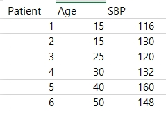
5.1.3.1 With R
- 데이터 입력
spearman <- read.table(text='
patient age sbp
1 15 116
2 15 130
3 25 120
4 30 132
5 40 160
6 50 148', header=T
)
spearman## patient age sbp
## 1 1 15 116
## 2 2 15 130
## 3 3 25 120
## 4 4 30 132
## 5 5 40 160
## 6 6 50 148- Spearman test
cor.test(~age+sbp, data=spearman, method="spearman")## Warning in cor.test.default(x = c(15L, 15L, 25L, 30L, 40L, 50L), y = c(116L, :
## Cannot compute exact p-value with ties##
## Spearman's rank correlation rho
##
## data: age and sbp
## S = 5.5766, p-value = 0.03606
## alternative hypothesis: true rho is not equal to 0
## sample estimates:
## rho
## 0.840668스피어만 상관계수는 0.840668로 나타나며, P-value는 0.03606으로 유의수준 5%하에서 유의한 것으로 나타난다.
- Kendall tau test
cor.test(~age+sbp, data=spearman, method="kendall")## Warning in cor.test.default(x = c(15L, 15L, 25L, 30L, 40L, 50L), y = c(116L, :
## Cannot compute exact p-value with ties##
## Kendall's rank correlation tau
##
## data: age and sbp
## z = 1.9127, p-value = 0.05578
## alternative hypothesis: true tau is not equal to 0
## sample estimates:
## tau
## 0.6900656켄달의 타우 값은 0.6907이며 P-value는 0.0558로 유의하지 않게 나타난다.
5.1.4 편상관계수
편상관계수(partial correlation coefficient)는 두 변수간의 상관성에 영향을 미치는 다른 변수를 통제하고 순수한 두 변수간의 상관관계를 의미함
세 변수 \(X_1, X_2, X_3\)가 있다고 할 때 \(X_3\)를 통제한 상태에서의 \(X_1\)과 \(X_2\)의 편상관계수 \[r_{12,3}=\frac{r_{12}-r_{13}r_{23}}{\sqrt{1-r_{12}^2}\sqrt{1-r_{23}^2}}\]
여기서 \(r_{ij}\)는 \(X_i\)와 \(X_j\)간의 상관계수를 의미
상관계수와 연관성 정도
\(1.0 \sim 0.7(-1.0\sim -0.7)\) : 매우 강한 연관성
\(0.7 \sim 0.4(-0.7\sim -0.4)\) : 상당한 연관성
\(0.4 \sim 0.2(-0.4\sim -0.2)\) : 약간의 연관성
\(0.2 \sim 0.0(-0.2\sim 0.0)\) : 연관성이 없음
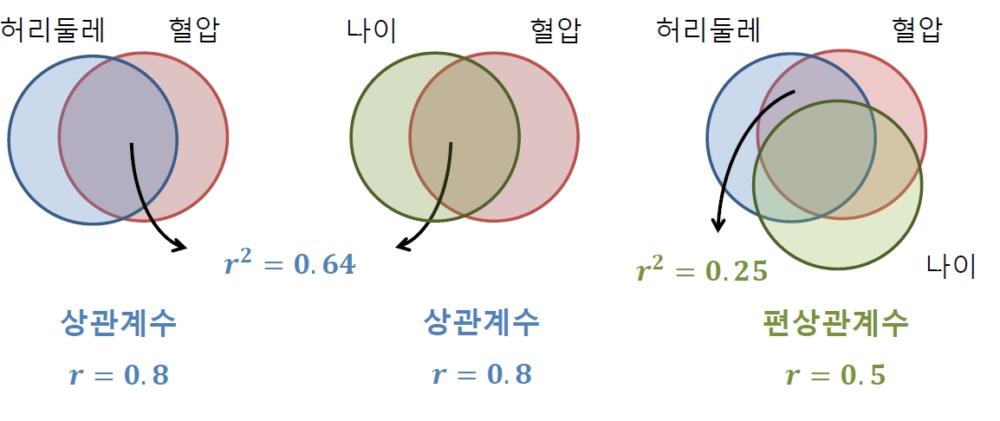
예제) 다음은 \(322\)명의 건강한 성인의 건강검진 자료이다. 자료에는 나이, 키, 몸무게, 허리둘레, BMI, 수축기 혈압 등의 정보가 담겨져 있다. 체중의 영향을 고려한 허리둘레와 BMI의 편상관계수를 구하라.
5.1.4.1 With R
- 데이터 입력
#reg_data <- read.csv(file="https://elflini.github.io/study/statanal/data/5.%20correlation_and_regression.csv", header=T)
exdata <- url("https://elflini.github.io/study/statanal/data/reg_data.rda")
load(file=exdata)
head(reg_data)## age height weight waistline BMI SBP
## 1 57 164 62.0 85 23.1 147
## 2 25 172 54.0 65 18.3 116
## 3 57 157 59.0 83 23.9 122
## 4 43 170 87.8 104 30.4 130
## 5 52 155 50.0 83 20.8 120
## 6 27 163 76.0 83 28.6 128- 편상관계수
library(ppcor)
with(reg_data, pcor.test(waistline, BMI, weight))## estimate p.value statistic n gp Method
## 1 0.5152468 3.64479e-23 10.73763 322 1 pearson편상관계수 추정량은 0.51525로 나타나며 P-value는 <.0001로 매우 유의하게 나타난다.
5.1.4.2 With SAS
SAS Code
filename reg_data URL "https://elflini.github.io/study/statanal/data/5.%20correlation_and_regression.csv" termstr=crlf;
proc import out=healthdata
datafile=reg_data
dbms=csv replace;
getnames=yes;
run;
proc corr data=healthdata plots=matrix;
var waistline bmi;
partial weight;
run;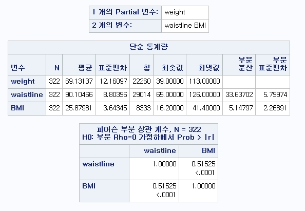
5.2 단순선형회귀분석
회귀모형(regression model)은 여러 개의 변수들 간의 관계를 나타내는 모형으로서 하나의 목적(종속, 반응) 변수 \(Y\)를 설명한다고 생각되는 설명(독립) 변수 \(X_1, \ldots, X_n\)의 선형 함수식으로 표현하는 통계적 모형
회귀모형은 선형회귀모형(linear regression model)과 비선형회귀모형(nonlinear regression model)이 있으며, \(Y\)가 설명변수들의 선형함수식으로 표현되는 모형을 선형회귀모형, 설명변수들의 비선형함수식(다항함수, 지수함수, 로그함수 등)으로 표현되는 모형을 비선형회귀모형이라고 함
일반적으로 회귀분석은 선형회귀모형을 의미
회귀분석의 목적
설명변수들과 반응변수 사이의 관계를 규정(기술적 목적)
설명변수들이 반응변수에 어떤 영향을 어느 정도 미치는지 설명
설명변수가 어떤 값으로 주어질 때 반응변수의 값은 얼마나 될지 예측
선형회귀모형에서 설명변수가
한 개만 포함된 경우: 단순선형회귀분석(simple linear regression)
두 개 이상이 포함된 경우: 다중선형회귀분석(multiple linear regression)
회귀분석에서 사용되는 변수의 형태는 독립변수와 종속변수 모두 원칙적으로 수치형 변수를 사용해야 함
순서형 볌수의 경우 각 범주들의 간격이 등간격이거나, 몇 개의 순서형 변수들의 합으로 된 변수도 적용 가능
- 독립변수의 경우 범주형 변수의 사용이 가능하나, 반드시 더미 변수(dummy variable) 형태로 바꾸어서 사용해야 함
회귀분석을 위한 기본 가정
독립변수 종속변수간의 선형적 관계
- 회귀분석은 독립변수와 종속변수간의 선형식을 기반으로 함. 따라서 독립변수와 종속변수간의 선형관계를 가정할 수 있어야 함
오차항의 등분산과 정규성
- 오차항(error term)은 종속변수와 예측값 간의 차이를 의미. 이 오차항은 일정한 분산을 갖는 정규분포를 가정함
오차항의 독립성
- 오차항은 서로 독립이라는 가정이 필요
단순선형회귀분석(simple linear regression analysis) : 하나의 목적변수에 대한 회귀모형을 만들 때 그 목적변수를 설명하는 독립변수로서 한 변수만을 고려하는 선형회귀모형을 단순선형회귀모형이라고 함
단순선형회귀모형
\[ \begin{aligned} y_i=\beta_0+\beta_1x_i+\epsilon_i , \,\,\, \epsilon_i \sim N(0, \sigma^2), \,\,\, i=1,\ldots, n \end{aligned} \]
\(\beta_0\): 절편(intercept), \(\beta_1\): 기울기(slope)
- \(\beta_0\)와 \(\beta_1\)을 회귀모형의 모수 또는 회귀계수(regression coefficient)라 함
- 기울기 \(\beta_1\)은 독립변수 \(X\)가 한 단위 증가할 때 종속변수 \(Y\)의 값이 평균적으로 증가(감소)하는 양을 의미
- 오차 \(\epsilon_i\)들은 서로 독립이며 \(N(0,\sigma^2)\)인 정규분포를 따름
예) 아버지와의 아들의 키(Galton, 1886)
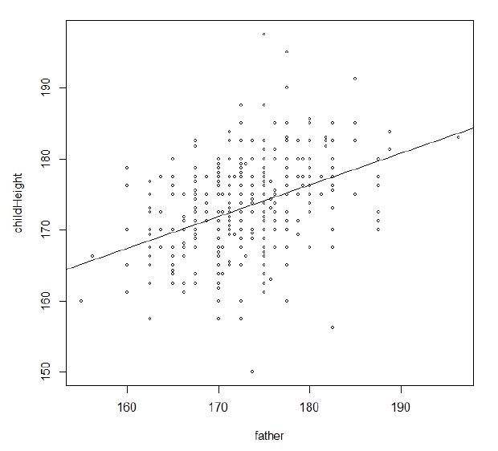
- 아버지의 키를 \(X\)(독립, 설명), 아들의 키를 \(Y\)(종속, 반응)로 두고 추정된 선형회귀모형
\[ \hat{Y}= 95.91+0.45X \]
- 해석
- \(X\)의 값이 한 단위 증가하면 \(Y\)의 값이 \(0.45\)만큼 증가한다. 즉, 아버지의 키와 아들의 키를 \(cm\) 단위로 측정하였다면, 아버지의 키가 \(1cm\) 증가하면 아들의 키는 \(0.45cm\) 만큼 증가한다.
- 예측
- 아버지의 키가 \(170cm\)라고 하면, 이때 아들의 평균 신장은
\[
\hat{y}=95.91+0.45\times 170=172.41
\]
5.2.1 최소제곱법
회귀모형을 만들기 위해서는 회귀 계수를 추정해야 하며, 이는 반응변수 대 설명변수의 산점도에 있는 점들을 가장 잘 적합(best fit) 혹은 표현하는 직선을 찾는 것과 동일
통상적으로 최소제곱법(least squares method)을 이용하여 모수를 추정하며, 이 방법은 직선으로부터 각 점까지의 수직거리(vertical distance)의 제곱합을 최소로 하는 직선의 방정식을 찾는 방법
이때 수직거리는 오차를 의미하며, 오차는 회귀모형을 통해 다음과 같이 표현 가능
\[ \epsilon_i=y_i - \beta_0 - \beta_1x_i, \,\,\, i=1, \ldots, n \]
수직거리의 제곱합(오차 제곱합) \[ S(\beta_0, \beta_1 )= \sum_{i=1}^n\epsilon_i^2=\sum_{i=1}^n(y_i - \beta_0 - \beta_1x_i)^2 \]
회귀계수는 오차 제곱합 \(S(\beta_0, \beta_1 )\)을 최소화하는 \(\beta_0\)와 \(\beta_1\)의 값을 추정하여 얻게 됨
5.2.2 회귀계수 추정
추정된 회귀계수 \[ \begin{aligned} \hat{\beta}_1=\frac{\sum_{i=1}^n(y_i-\bar{y})(x_i-\bar{x})}{\sum_{i=1}^n(x_i-\bar{x})^2}, \,\,\, \hat{\beta}_0=\bar{y}-\hat{\beta}_1\bar{x} \end{aligned} \]
적합된 회귀모형(fitted model) 또는 최소제곱회귀선(least squares regression line)
\[ \hat{Y}=\hat{\beta}_0+\hat{\beta}_1X \]
- 적합값(fitted value)
\[ \hat{y}_i=\hat{\beta}_0+\hat{\beta}_1x_i, \,\,\, i=1, \ldots, n \] - 잔차(residual)
\[ e_i=y_i-\hat{y}_i=y_i - \hat{\beta}_0 - \hat{\beta}_1x_i, \,\,\, i=1, \ldots, n \]
- 잔차의 성질
- 잔차의 합은 항상 \(0\)임. 이는 회귀선의 위쪽에 있는 점까지의 거리와 아래쪽에 있는 점까지의 거리의 합이 같다는 것을 의미. 따라서 회귀선은 평균과 같은 개념임
- 오차의 분산추정: 회귀계수에 대한 구간추정이나 가설검정에 적용하기 위해 오차의 분산 추정이 필요
\[ \begin{aligned} \hat{\sigma}^2=\frac{\sum_{i=1}^n(y_i-\hat{y}_i)^2}{n-2}=\frac{SSE}{n-2} \end{aligned} \]
\(\hat{\sigma}^2\)는 잔차평균제곱(MSE)이라 함
추정량의 기대값
\[ \begin{aligned} E(\hat{\beta}_0)=\beta_0, \,\,\, E(\hat{\beta}_1)=\beta_1 \end{aligned} \]
- 추정량의 분산
\[ \begin{aligned} V(\hat{\beta}_0)=\sigma^2(1/n+\bar{X}^2/\sum_{i=1}^n(X_i-\bar{X})^2), \,\,\, V(\hat{\beta}_1)=\sigma^2/\sum_{i=1}^n(X_i-\bar{X})^2 \end{aligned} \]
- 회귀계수의 구간추정
\[ \begin{aligned} \hat{\beta}_1 &\pm t_{\alpha/2}(n-2)\hat{\sigma}\sqrt{1/\sum_{i=1}^n(X_i-\bar{X})^2}\\ \hat{\beta}_0 &\pm t_{\alpha/2}(n-2)\hat{\sigma}\sqrt{1/n+\bar{X}^2/\sum_{i=1}^n(X_i-\bar{X})^2} \end{aligned} \]
5.2.3 회귀계수 가설검정
가설 \[H_0: \beta_1=0, \,\,\, vs. \,\,\, H_1:\beta_1 \neq 0\]
검정통계량 \[T_0=\hat{\beta}_1 / \sqrt{\hat{\sigma}^2/\sum_{i=1}^n(X_i-\bar{X})^2} \sim t(n-2)\]
기각역 \[|T_0|>t_{\alpha/2}(n-2)\]
분산분석: 회귀계수 \(\beta_1\)에 대한 또 다른 검정 방법
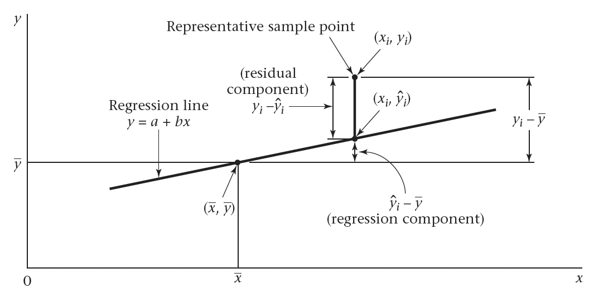
- 변동분해
\[ \begin{aligned} \sum_{i=1}^n(y_i-\bar{y})^2 &= \sum_{i=1}^n(\hat{y}_i-\bar{y})^2+\sum_{i=1}^n(y_i-\hat{y}_i)^2\\ SST &= SSR + SSE \end{aligned} \]
검정통계량 \[ F_0=\frac{SSR/(1)}{SSE/(n-2)}=\frac{MSR}{MSE} \]
기각역: \(F_0 > F_{\alpha}(1,n-2)\)
5.2.4 결정계수
결정계수(coefficient of determination)
- 적합된 모형이 자료를 얼마나 잘 대표하는지를 나타내는 정도. 즉 회귀모형의 독립변수가 반응변수 \(Y\)를 설명하는 정도를 나타내는 척도
\[ \begin{aligned} R^2=\frac{SSR}{SST}=1-\frac{SSE}{SST} \end{aligned} \]
결정계수는 \(0\le R^2 \le 1\) 범위의 값으로 \(1\)에 가까울수록 모형의 설명력은 높고 \(0\)에 가까울수록 모형의 설명력은 낮은 것으로 평가
단순선형회귀모형의 경우, 결정계수 \(R^2\)와 \(X\)와 \(Y\)의 상관계수 \(r\)은 \(R^2=r^2\)의 관계를 가짐
5.2.5 예제
- 다음은 \(322\)명의 건강한 성인의 건강검진 자료이다. 자료에는 나이, 키, 몸무게, 허리둘레, BMI, 수축기 혈압 등의 정보가 담겨져 있다. 허리둘레로 BMI를 예측하는 회귀식을 구하라.
5.2.5.1 With R
- 데이터 입력
#reg_data <- read.csv(file="https://elflini.github.io/study/statanal/data/5.%20correlation_and_regression.csv", header=T)
exdata <- url("https://elflini.github.io/study/statanal/data/reg_data.rda")
load(file=exdata)
head(reg_data)## age height weight waistline BMI SBP
## 1 57 164 62.0 85 23.1 147
## 2 25 172 54.0 65 18.3 116
## 3 57 157 59.0 83 23.9 122
## 4 43 170 87.8 104 30.4 130
## 5 52 155 50.0 83 20.8 120
## 6 27 163 76.0 83 28.6 128- 산점도 그리기
plot(BMI~waistline, data=reg_data, xlab="허리둘레", ylab="BMI")
- 상관분석
with(reg_data, cor.test(BMI,waistline))##
## Pearson's product-moment correlation
##
## data: BMI and waistline
## t = 23.906, df = 320, p-value < 2.2e-16
## alternative hypothesis: true correlation is not equal to 0
## 95 percent confidence interval:
## 0.7576655 0.8367351
## sample estimates:
## cor
## 0.80066- BMI와 허리둘레간의 상관계수는 0.80으로 통계적으로 매우 유의하게 나타난다. 따라서 BMI와 허리둘레간에는 선형관계가 강한 것으로 보임
- 단순회귀 모형
fit <- lm(BMI~waistline, data=reg_data)
summary.aov(fit)## Df Sum Sq Mean Sq F value Pr(>F)
## waistline 1 2732 2731.7 571.5 <2e-16 ***
## Residuals 320 1530 4.8
## ---
## Signif. codes: 0 '***' 0.001 '**' 0.01 '*' 0.05 '.' 0.1 ' ' 1- 회귀식이 통계적으로 유의한지를 검정하는 분산분석표를 살펴보면, F-통계량의 유의확률이 <2e-16으로 유의수준 0.05보다 작다. 즉, 이 회귀식은 통계적으로 매우 유의하다고 할 수 있음
- 따라서 선형회귀모형으로 적합해도 문제가 없다할 수 있음
summary(fit)##
## Call:
## lm(formula = BMI ~ waistline, data = reg_data)
##
## Residuals:
## Min 1Q Median 3Q Max
## -7.5197 -1.3087 -0.0444 1.2532 12.0683
##
## Coefficients:
## Estimate Std. Error t value Pr(>|t|)
## (Intercept) -3.97611 1.25481 -3.169 0.00168 **
## waistline 0.33135 0.01386 23.906 < 2e-16 ***
## ---
## Signif. codes: 0 '***' 0.001 '**' 0.01 '*' 0.05 '.' 0.1 ' ' 1
##
## Residual standard error: 2.186 on 320 degrees of freedom
## Multiple R-squared: 0.6411, Adjusted R-squared: 0.6399
## F-statistic: 571.5 on 1 and 320 DF, p-value: < 2.2e-16회귀식의 상수(절편) 값은 -3.976이며, 유의확률은 0.0017로 통계적으로 유의하다. 하지만 회귀식의 절편은 특별히 유의성을 논하지 않음
허리둘레의 회귀계수는 0.33이고, 이 회귀계수의 통계적 유의성을 결정하는 t-값은 23.91로 유의확률이 <2e-16이므로, 이 회귀계수는 통계적으로 매우 유의하다고 볼 수 있음
추정된 회귀식
\[ \hat{BMI}=-3.976+0.33허리둘레 \]
회귀식을 살펴보면 허리둘레가 1만큼 증가하면 BMI는 0.33씩 증가한다는 것을 의미함
- 절편값은 -3.976으로, 허리둘레가 0일때 BMI의 평균을 의미하므로 의미가 없음
만약, 허리둘레가 85이면 경우 예상 BMI는 \(-3.976+0.33\times 85=24.074\)가 됨
결정계수 \(R^2=0.6411\)은 총변동 중에서 회귀선에 의하여 설명되는 비율을 의미하는 것으로 BMI의 변동 중에서 \(64.11\%\)가 허리둘레에 의해 설명된다는 것을 의미
- \(R^2\)값의 범위는 \(0\le R^2 \le 1\)로, 모든 관찰값과 회귀식이 일치한다면 \(R^2=1\)이 되어 독립변수와 종속변수간에 \(100\%\)의 상관관계가 있다고 할 수 있음
- 즉, \(R^2\)의 값이 1에 가까울수록 회귀선은 표본을 설명하는데 유용함
추정된 회귀선
plot(BMI~waistline, data=reg_data, xlab="허리둘레", ylab="BMI")
abline(fit, col=2)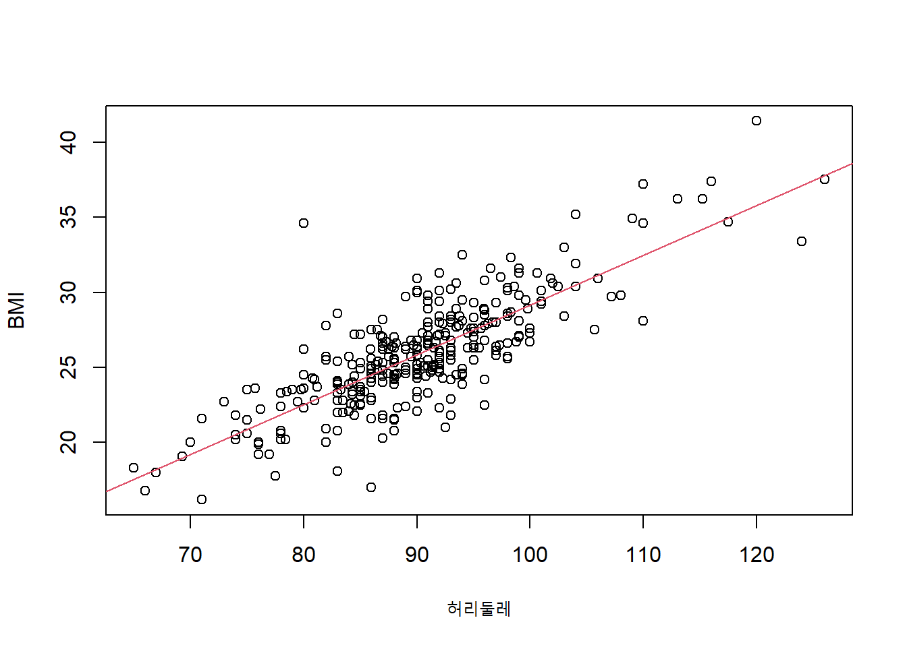
\[ \hat{BMI}=-3.976+0.33허리둘레 \]
- 적합된 회귀식을 그림으로 표현하면 위와 같음
- 실제 BMI값과 회귀식을 통해 산출되는 BMI의 추정값이 다소 차이가 있음을 알 수 있음
- 잔차분석
par(mfrow=c(2,2))
plot(fit)
- 잔차와 예측값을 나타낸 산점도(왼쪽 위)는 잔차의 등분산성, 선형성 등을 판단함
- 잔차 값이 0을 기준으로 고르게 퍼져 있으면 등분산성을 만족하는데 문제가 없음
- 잔차들이 특정한 패턴없이 무작위로 퍼져있다면 선형성을 가정하는데 문제가 없음
- 표준화 잔차의 정규 Q-Q 도표(오른쪽 위)는 잔차(오차항)의 정규성을 살펴보는 그림
- 가운데 실선을 따라 점들이 모여 있을수록 정규성을 만족함
5.2.5.2 With SAS
SAS Code
filename reg_data URL "https://elflini.github.io/study/statanal/data/5.%20correlation_and_regression.csv" termstr=crlf;
proc import out=healthdata
datafile=reg_data
dbms=csv replace;
getnames=yes;
run;
proc corr data=healthdata plots=matrix;
var waistline bmi;
run;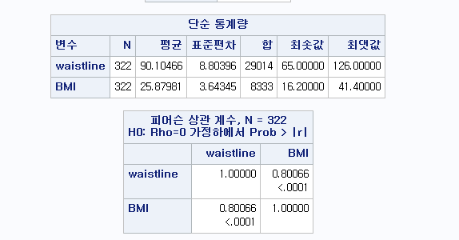
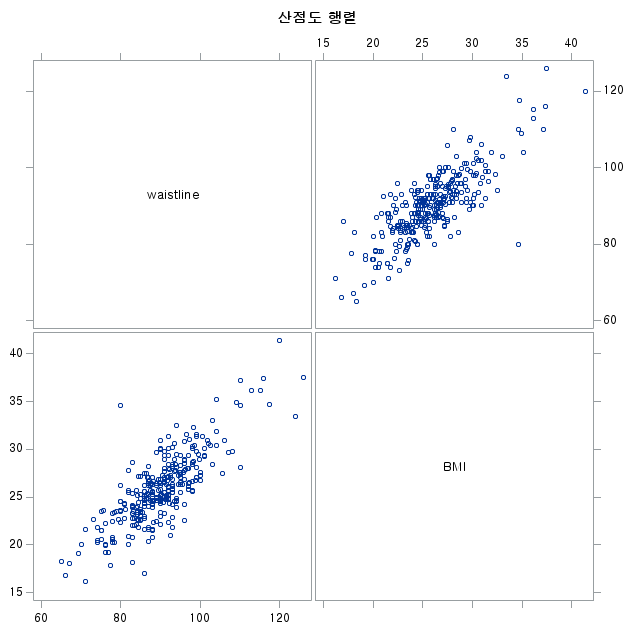
ods graphics on;
proc reg data=healthdata plots=residuals plots=QQ;
model bmi=waistline;
run;
ods graphics off;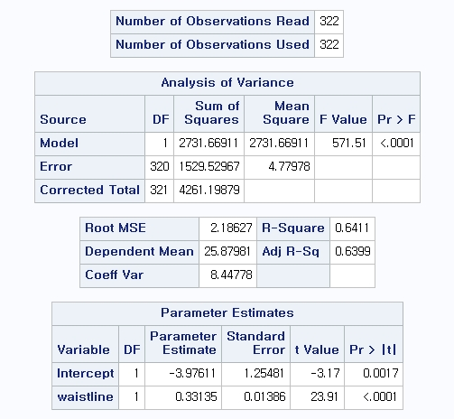
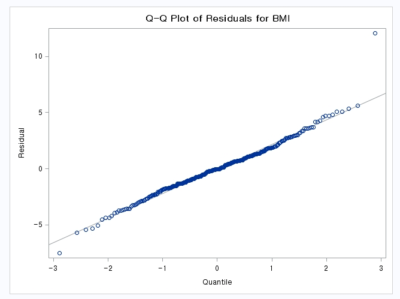
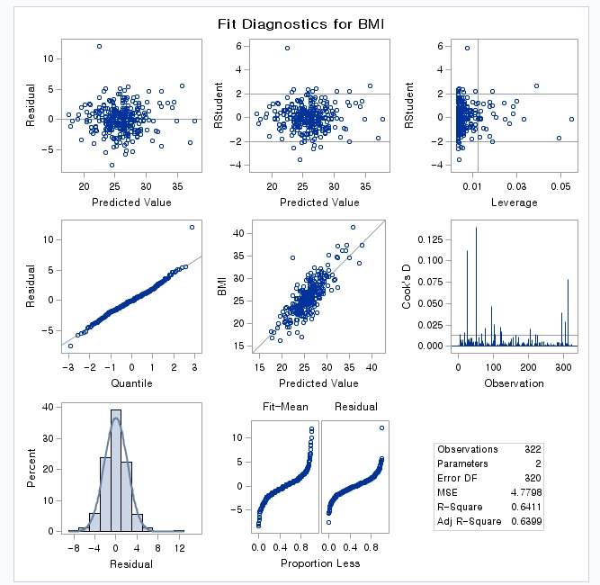
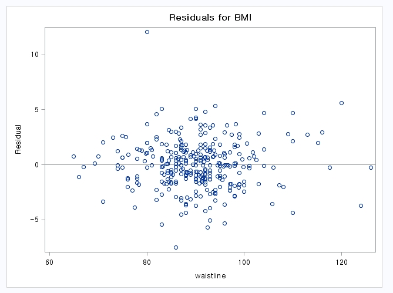
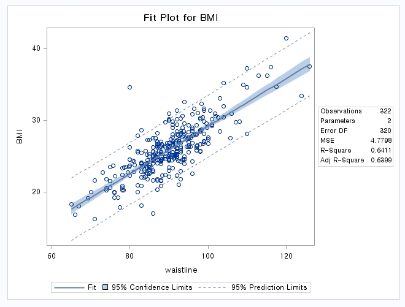
5.3 다중선형회귀분석
종속변수를 설명하는 독립변수들이 두 개 이상 있는 경우, 즉 여러 개의 독립변수들을 동시에 고려하는 선형회귀모형을 다중선형회귀모형(multiple linear regression model) 이라고 함
다중선형회귀모형
\[ \begin{aligned} y_i=\beta_0+\beta_1x_{1i}+\beta_2x_{2i}+\ldots +\beta_px_{pi}+\epsilon_i , \,\,\, \epsilon_i \sim N(0,\sigma^2), \,\,\, i=1,\ldots, n \end{aligned} \]
\(\beta_0\): 절편, \(\beta_j(j=1,\cdots ,p)\): 설명변수에 대한 회귀계수
회귀계수 \(\beta_j\)는 다른 설명변수의 값이 고정된 상태에서 \(x_j\)가 한 단위 변동함에 따른 반응변수의 변동크기를 나타냄
오차 \(\epsilon_i\)들은 서로 독립이며 \(N(0,\sigma^2)\)인 정규분포를 따름
필요한 경우, 설명변수나 반응변수를 변환하여 선형회귀모형에 포함 가능
예) \(x^2\), \(1/x\), \(log(x)\), \(\sqrt{x}\), \(1/y\), \(log(y)\)
다중회귀모형의 회귀계수 추정은 단순회귀와 마찬가지로 최소제곱법을 이용
오차제곱합 \[S(\beta_0, \beta_1,\ldots, \beta_p )= \sum_{i=1}^n\epsilon_i^2=\sum_{i=1}^n(y_i - \beta_0 - \beta_1x_i-\cdots -\beta_px_{pi})^2\]
회귀계수는 오차 제곱합 \(S(\beta_0, \beta_1,\ldots, \beta_p )\)을 최소화하는 \(\beta_i, \,\,\, i=0,\ldots, p\)의 값을 추정하여 얻게 됨
추정된 회귀계수
\[ \hat{\mathbf{\beta}}=(X'X)^{-1}X'\mathbf{y} \]
\(X\); design matrix
추정된 회귀모형 \[ \hat{Y}=\hat{\beta}_0+\hat{\beta}_1X_1+\hat{\beta}_2X_2+\ldots +\hat{\beta}_pX_p \]
다중회귀모형은 적어도 하나의 독립변수가 종속변수에 선형적인 영향을 준다는 가정에서 만들어지기 때문에 추정된 회귀모형이 의미가 있기 위해서는 다음 가설에 대한 검정에서 유의한 결론이 나와야 함
회귀모형 가설
- \(H_0 : \beta_1=\beta_2=\cdots=\beta_p=0\)
- \(H_1 :\) 적어도 하나의 \(\beta_i \ne 0, \,\,\, i=1,\ldots, p\)
가설검정을 위한 분산분석표
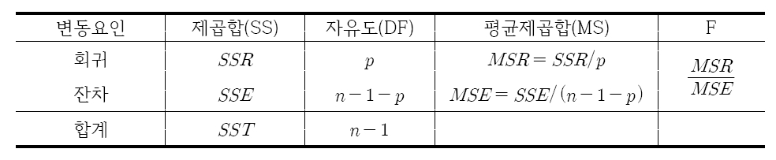
검정통계량 \[ F_0=\frac{MSR}{MSE} \]
기각역 \[ F_0 > F_{\alpha}(p,n-1-p) \]
설정한 회귀모형에 대한 검정에서 유의하다는 결론이 내려지면 추정된 회귀식은 종속변수 \(Y\)를 예측하는 데 사용될 수 있음
- 하지만 이것이 모형에 있는 모든 독립변수가 종속변수에 영향을 준다는 것을 의미하지 않음
- 회귀모형에 대한 검정에서는 검정에 사용된 여러 개의 독립변수 중에서 오직 한 개의 변수만이 종속변수에 영향을 주더라도 회귀모형이 유의하다는 결론이 나올 수 있기 때문
- 따라서 설정한 회귀모형에서 각각의 독립변수들이 종속변수에 영향을 주는지 알아보기 위한 검정이 필요
각 회귀계수에 대한 가설
- \(H_0 : \beta_i=0, \,\,\, i=1,\ldots, p\)
- \(H_1 :\beta_i \ne 0\)
검정통계량
\[ T=\frac{\hat{\beta}_i}{se(\hat{\beta}_i)} \sim t(n-1-p) \]
- 기각역
\[ |T|> t_{\alpha/2}(n-1-p) \]
각각의 회귀계수에 대한 검정에서 통계적으로 유의하지 않다고 판명된 독립변수는 모형에서 제거하고 다시 회귀분석을 실시하는 것이 좋음(항상 그런것은 아님)
만약 종속변수와 상관이 높은 독립변수인데도 불구하고 유의하지 않게 나타났다면 독립변수들간의 다중공선성(multicollinearity)을 의심해 볼 수 있음
5.3.1 변수 선택
이론적인 배경이나 사전 경험이 있는 경우 모형에 포함시킬 독립변수들의 선택이 비교적 용이
일반적으로 종속변수를 설명해주는 독립변수들을 정확하게 선택하는 것은 쉽지 않음
종속변수를 설명한다고 생각되는 모든 가능한 독립변수들을 파악해서 회귀모형에 포함시킬 수도 있으나, 이런 많은 독립변수들을 모형에 포함시켜 분석하는 것은 다음과 같은 이유로 문제가 됨
- 모형내의 변수의 값을 측정하고 유지하는 데 많은 시간과 돈이 필요
- 독립변수들 사이에서는 정보가 중복되기 쉬워서 종속변수에 대한 변수들의 영향력을 알기 어려워 짐
- 일반적으로 복잡한 모형보다는 간단한 모형을 선호
- 독립변수들 사이에 상관계수가 높은 경우에는 다중공선성 문제가 나타나 회귀모형이 불안해짐
독립변수 중에서 종속변수에 큰 영향을 주는 변수만을 선택하여 모형에 포함시키고 종속변수에 별 영향을 주지 않는 변수는 제거할 필요가 있음. 이를 위한 방법을 변수 선택법(variable selection method)이라 함
일반적인 변수 선택법
- 모든 변수를 다 쓰는 방법
- 전진 선택법(forward selection)
- 후진 제거법(backward elimination)
- 단계적 선택법(stepwise selection)
- Best subset selection
변수 선택 척도
- p-value
- AIC, BIC
5.3.2 결정계수
결정계수 \(R^2\)는 종속변수 \(Y\)의 총변동 중에서 독립변수들에 의해 설명되는 \(Y\) 변동의 비율로 정의
따라서 \(R^2\)는 회귀모형에 있는 독립변수들이 \(Y\)값을 얼마나 잘 설명해 주는가에 대한 측도로 사용
자연과학분야에서는 \(0.8\)이상의 높은 \(R^2\)값을 가지는 실험 자료를 종종 볼 수 있으나, 사회과학분야에서는 \(0.3\) 이상의 \(R^2\)값을 가지는 자료가 많지 않음
\(R^2\) 통계량에 대한 검정방법은 존재하지 않기 때문에 모형의 적합성에 대해 \(R^2\)값으로 설명하는 것은 부적절함. 따라서 독립변수들의 설명력으로만 해석하고, 모형의 적합성에 대해서는 분산분석표에 의한 검정 결과를 사용하는 것이 좋음
설명력이 없는 설명변수가 모형에 추가되어도 결정계수는 증가
다중회귀 모형에서는 모형에 포함된 설명변수의 개수를 반영한 조정된 결정계수(adjusted coefficient of determination) 이용하는 것이 좋음
조정된 결정계수 \[ \begin{aligned} R^{2*}=1-\frac{SSE/(n-p)}{SST/(n-1)} \end{aligned} \]
조정된 결정계수와 결정계수의 관계 \[ R^{2*}=1-\frac{n-1}{n-p}(1-R^2) \]
5.3.3 표준화 회귀계수
추정된 회귀계수의 크기는 독립변수들의 측정단위에 영향을 받기 때문에 독립변수들이 종속변수에 주는 영향력을 비교하기위해 회귀계수의 크기를 직접 비교하면 안됨
예를 들어, 종속변수 체중에 영향을 주는 독립변수로 키를 고려한 경우 인치(inch) 단위를 사용한 경우의 회귀계수는 \(cm\) 단위를 사용한 경우의 회귀계수의 \(2.5\)배가 됨
독립변수들의 영향력을 비교하기 위해서는 측정단위에 관계없는 회귀계수가 필요하며, 이러한 회귀계수를 표준화 회귀계수(standardized regression coefficient) 혹은 베타 계수(beta coefficient)라 함
회귀계수 \(\beta_i\)와 표준화 회귀계수 \(\beta_i^*\)의 관계
\[ \beta_i = \beta_i^* \left( \frac{S_y}{S_i} \right), \,\,\, i=1,\ldots, p \]
- 독립변수들 간 상관관계가 있을 경우 상대적인 중요도를 설명하는데 위험이 있을 수 있음
5.3.4 다중공선성
데이터로부터 추정된 다중회귀모형은 예측변수들 간에 상호의존관계가 심각하지 않다는 묵시적인 가정 하에서 시행됨
예측변수들 간의 강한 상관성을 공선성 혹은 다중공선성(multicollinearity) 문제라 함
다중공선성 문제는 회귀모형에서의 오류가 아닌 데이터의 결함에 의해 나타나는 결과
다중공선성 문제가 발생하면, 추정된 회귀계수의 부호가 사전에 기대한(이론적인) 것과 일치하지 않을 수 있으며 이론적으로 중요한 변수에 대한 회귀계수가 큰 표준오차를 가짐으로 인해 유의하지 않을 수 있음
다중공선성 문제는 분산팽창계수(variance inflation coefficient: VIF) 또는 VIF의 역수인 공차한계(tolerance)를 이용하여 판단
VIF \(> 10\) 또는 공차한계 \(< 0.1\)인 경우 다중공선성 문제가 있다고 판단
5.3.5 더미변수(가변수)
회귀분석에 사용되는 독립변수는 기본적으로 연속형 변수여야 함
범주형 변수를 독립변수로 사용할때는 더미변수(dummy variable)화 하여 사용함
더미변수화 하는 방법은 여러 가지가 존재하나 일반적으로 원래 변수가 지닌 범주의 개수보다 하나 적은 개수의 변수로 가변수화 함
예를 들어 \(X_4\) 변수가 고졸=1, 전문대졸=2, 대졸=3의 값을 가지고 있다면,
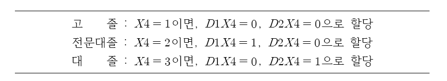
5.3.6 회귀모형에 대한 가정 검토
- 회귀분석을 적용하기 위해서는 다음과 같은 가정이 충족되어야 함
\[ \epsilon_i \sim N(0, \sigma^2 ), \,\,\, i=1, \ldots n, \,\,\, \epsilon_i \text{들은 서로 독립} \]
가정이 만족되지 않으면 부석결과가 정확하지 않을 수 있고, 경우에 따라서는 전혀 다른 방향의 결론이 도출되기도 함
회귀 가정의 검토를 위해 \(\epsilon_i\)의 추정값인 잔차 \(e_i=y_i-\hat{y}_i\)를 사용
잔차를 통해 가정을 검토하는 분석을 잔차분석이라 함
잔차분석
- 오차항의 정규성 검토
- 오차항의 등분산성 검토
- 오차항들간의 자기상관(autocorrelation) 검토(독립성)
잔차분석
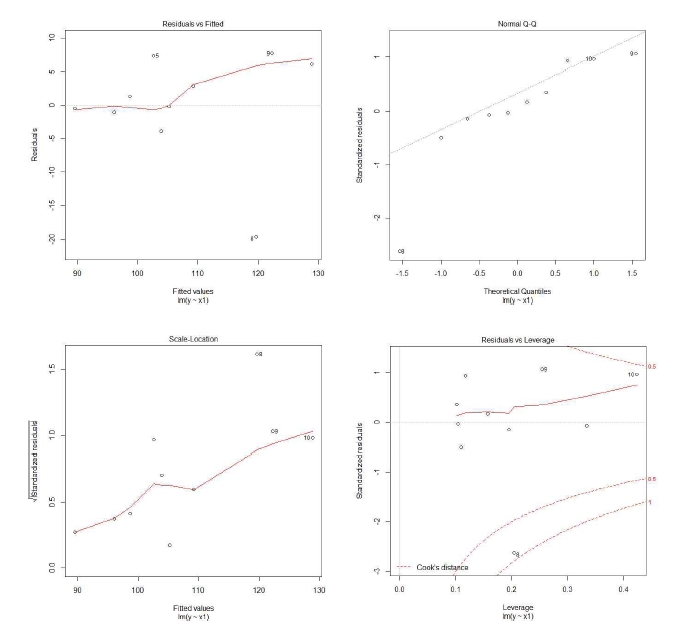
자기상관(독립성) 문제는 더빈-왓슨(Durbin-Watson) 통계량을 이용하여 판단
더빈-왓슨 통계량은 인접하는 오차항들 \(\epsilon_i\)와 \(\epsilon_{i-1}\)간에 자기상관이 존재하는지 알아보는 검정법
검정통계량
\[ d=\frac{\sum_{i=2}^n (e_i - e_{i-1})^2}{\sum_{i=1}^n e_i^2}, \,\,\, e_i : i\text{번째 잔차} \]
더빈-왓슨 통계량은 \(0\sim 4\)의 범위를 가지며, 통계량 값이 \(2\)보다 작을수록 오차항 사이의 양의 상관관계를, 통계량 값이 \(2\)보다 클 수록 오차항 사이에 음의 상관관계를 가짐
통계량 값이 \(2\)에 가까운 값을 가지면 오차항의 독립성이 만족되고, 이 때 자기상관 문제가 발생하지 않았다고 판단함
정규성과 등분산성은 정규 \(P-P\) 또는 \(Q-Q\) 도표와 잔차의 산점도로 간단히 확인 가능
회귀의 기본가정을 만족한다고 해서 반드시 그 모형이 좋은 모형이라고 말 할 수 없지만, 기본 가정을 만족하면 좋은 모형을 찾기가 수월해 짐
따라서 기본가정이 만족하지 않는 경우에는 가정을 만족하게끔 조절해주는 것이 좋음
이 외에 회귀계수에 영향을 주는 레버리지(leverage), Cook’s distance, DFFIT 값 등을 고려
또한 모형 설정 시 가능한 교호작용을 고려하는 것이 좋음
5.3.7 예제
- 다음은 \(322\)명의 건강한 성인의 건강검진 자료이다. 자료에는 나이, 키, 몸무게, 허리둘레, BMI, 수축기 혈압 등의 정보가 담겨져 있자. 이 자료를 바탕으로 수축기 혈압을 예측하는 회귀모형을 생성하라.
5.3.7.1 With R
- 데이터 입력
#reg_data <- read.csv(file="https://elflini.github.io/study/statanal/data/5.%20correlation_and_regression.csv", header=T)
exdata <- url("https://elflini.github.io/study/statanal/data/reg_data.rda")
load(file=exdata)
head(reg_data)## age height weight waistline BMI SBP
## 1 57 164 62.0 85 23.1 147
## 2 25 172 54.0 65 18.3 116
## 3 57 157 59.0 83 23.9 122
## 4 43 170 87.8 104 30.4 130
## 5 52 155 50.0 83 20.8 120
## 6 27 163 76.0 83 28.6 128- 산점도 그리기
pairs(SBP~age+height+weight+waistline+BMI, data=reg_data)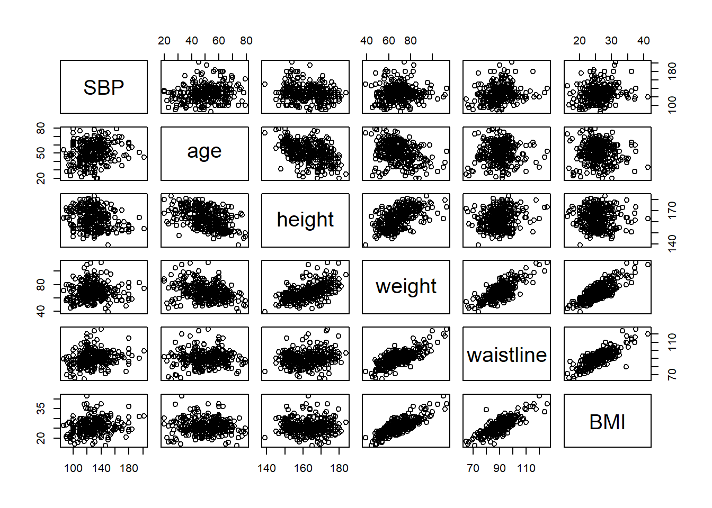
- 상관분석
library(Hmisc)
rcorr(as.matrix(reg_data))## age height weight waistline BMI SBP
## age 1.00 -0.47 -0.34 0.05 -0.06 0.19
## height -0.47 1.00 0.59 0.17 -0.03 -0.16
## weight -0.34 0.59 1.00 0.75 0.78 0.06
## waistline 0.05 0.17 0.75 1.00 0.80 0.21
## BMI -0.06 -0.03 0.78 0.80 1.00 0.21
## SBP 0.19 -0.16 0.06 0.21 0.21 1.00
##
## n= 322
##
##
## P
## age height weight waistline BMI SBP
## age 0.0000 0.0000 0.3709 0.3180 0.0008
## height 0.0000 0.0000 0.0023 0.5330 0.0031
## weight 0.0000 0.0000 0.0000 0.0000 0.2564
## waistline 0.3709 0.0023 0.0000 0.0000 0.0002
## BMI 0.3180 0.5330 0.0000 0.0000 0.0001
## SBP 0.0008 0.0031 0.2564 0.0002 0.0001- SBP와 weight간의 상관계수는 0.06, 유의확률은 0.2564로 선형관계가 없는 것으로 나타났으며, age, height, waistline, BMI는 선형관계가 유의한 것으로 나타남
- 다중회귀 모형 - 모든 변수를 다 사용하는 경우
fit <- lm(SBP~age+height+weight+waistline+BMI, data=reg_data)
summary(fit)##
## Call:
## lm(formula = SBP ~ age + height + weight + waistline + BMI, data = reg_data)
##
## Residuals:
## Min 1Q Median 3Q Max
## -43.449 -11.628 -1.081 9.635 64.919
##
## Coefficients:
## Estimate Std. Error t value Pr(>|t|)
## (Intercept) -19.3598 141.9737 -0.136 0.8916
## age 0.1899 0.1051 1.808 0.0716 .
## height 0.5913 0.8621 0.686 0.4933
## weight -1.0241 1.0141 -1.010 0.3133
## waistline 0.3231 0.2206 1.465 0.1440
## BMI 3.2248 2.7177 1.187 0.2363
## ---
## Signif. codes: 0 '***' 0.001 '**' 0.01 '*' 0.05 '.' 0.1 ' ' 1
##
## Residual standard error: 18.06 on 316 degrees of freedom
## Multiple R-squared: 0.09673, Adjusted R-squared: 0.08243
## F-statistic: 6.768 on 5 and 316 DF, p-value: 5.187e-06F-statistic에 대한 p-value가 5.187e-06으로 통계적으로 유의하게 나타난다. 따라서 선형모형이 성립함
회귀계수는 age가 0.1899, height는 0.5913, weight는 -1.0241, waistline는 0.3231, BMI는 3.2248로 나타났으나, 유의한 변수는 없는것으로 나타남
- 다중공선성
library(car)
vif(fit) ## age height weight waistline BMI
## 1.530112 57.004090 149.609824 3.710049 96.452809다중공선성을 살펴보면, height, weight, BMI는 vif값이 10보다 크게 나타나기 때문에 다중공선성 문제가 있는것으로 보임
- 즉, height, weight, BMI 간에는 독립을 유지하기 어렵기 때문에 회귀 계수를 왜곡시킴
이 경우, 적절한 변수를 선택하여 모형을 다시 적합시켜야 함
여기서는 통계적 변수 선택법인 단계적선택법을 통해 적절한 변수를 선택하여 모형을 적합시킴
- 다중선형회귀모형 - 단계적 선택법을 사용하는 경우
fit2 <- step(fit)## Start: AIC=1869.63
## SBP ~ age + height + weight + waistline + BMI
##
## Df Sum of Sq RSS AIC
## - height 1 153.53 103267 1868.1
## - weight 1 332.81 103446 1868.7
## - BMI 1 459.45 103573 1869.1
## <none> 103113 1869.6
## - waistline 1 700.11 103813 1869.8
## - age 1 1066.16 104179 1870.9
##
## Step: AIC=1868.11
## SBP ~ age + weight + waistline + BMI
##
## Df Sum of Sq RSS AIC
## <none> 103267 1868.1
## - waistline 1 673.29 103940 1868.2
## - age 1 1063.68 104330 1869.4
## - weight 1 1253.53 104520 1870.0
## - BMI 1 2310.05 105577 1873.2summary(fit2)##
## Call:
## lm(formula = SBP ~ age + weight + waistline + BMI, data = reg_data)
##
## Residuals:
## Min 1Q Median 3Q Max
## -43.368 -11.600 -1.212 9.972 65.881
##
## Coefficients:
## Estimate Std. Error t value Pr(>|t|)
## (Intercept) 77.7238 11.1234 6.987 1.66e-11 ***
## age 0.1897 0.1050 1.807 0.07171 .
## weight -0.3387 0.1727 -1.962 0.05068 .
## waistline 0.3166 0.2202 1.438 0.15152
## BMI 1.3957 0.5241 2.663 0.00814 **
## ---
## Signif. codes: 0 '***' 0.001 '**' 0.01 '*' 0.05 '.' 0.1 ' ' 1
##
## Residual standard error: 18.05 on 317 degrees of freedom
## Multiple R-squared: 0.09538, Adjusted R-squared: 0.08397
## F-statistic: 8.356 on 4 and 317 DF, p-value: 2.028e-06R에서 step 함수를 이용한 단계적 선택법은 AIC를 기준으로 변수를 선택함
age, weight, waistline, BMI 변수가 선택됨
- 다중공선성
vif(fit2) ## age weight waistline BMI
## 1.530097 4.345072 3.703107 3.593545- 결과를 살펴보면 선택된 변수간에는 다중공선성 문제는 없는 것으로 보임
- 정규성 검정
res <- residuals(fit2)
shapiro.test(res)##
## Shapiro-Wilk normality test
##
## data: res
## W = 0.97723, p-value = 5.509e-05Shapiro-Wilk 검정을 통해 정규성을 살펴보면 p-value가 0.05보다 작기 때문에 정규성을 만족하지 않는 것으로 나옴
이 경우, SBP의 로그변환, Box-Cox 등을 이용할 수 있음음
- 잔차그림
par(mfrow=c(2,2))
plot(fit2) 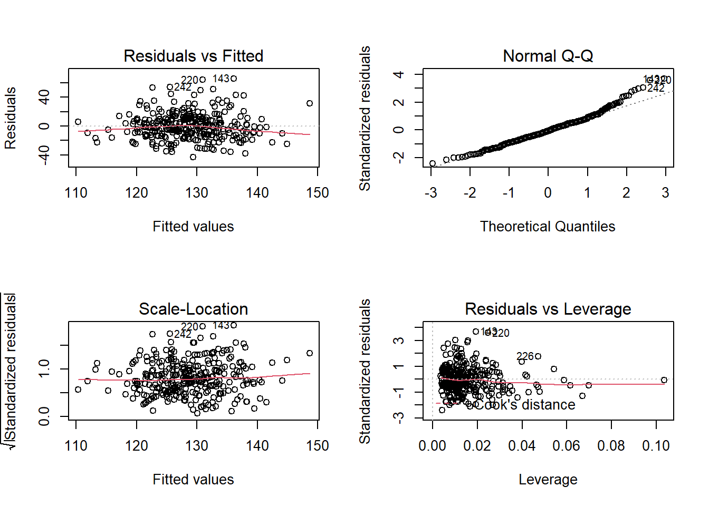
- Durbin-Watson 자기상관검정
library(lmtest)## 필요한 패키지를 로딩중입니다: zoo##
## 다음의 패키지를 부착합니다: 'zoo'## The following objects are masked from 'package:base':
##
## as.Date, as.Date.numericdwtest(fit2, alternative="two.sided") ##
## Durbin-Watson test
##
## data: fit2
## DW = 1.9474, p-value = 0.6362
## alternative hypothesis: true autocorrelation is not 0- 더빈-왓슨 검정 결과 유의확률이 0.6362로 자기상관이 없는것으로 나타남남
- Leverage
hatvalues(fit) ## 1 2 3 4 5 6
## 0.006263780 0.056560684 0.007520627 0.014101873 0.022966036 0.030273241
## 7 8 9 10 11 12
## 0.016542085 0.004954000 0.037609592 0.022427606 0.007841295 0.020545891
## 13 14 15 16 17 18
## 0.004887047 0.019174630 0.008196496 0.010742904 0.141884682 0.060329655
## 19 20 21 22 23 24
## 0.016438787 0.032161969 0.016177612 0.017056919 0.011148986 0.012303707
## 25 26 27 28 29 30
## 0.008758419 0.124222471 0.006610500 0.009393306 0.070828187 0.005981870
## 31 32 33 34 35 36
## 0.004303481 0.023225285 0.048619734 0.009744022 0.013232630 0.023704530
## 37 38 39 40 41 42
## 0.008668079 0.010724717 0.015565591 0.021265480 0.006545184 0.026680928
## 43 44 45 46 47 48
## 0.028585192 0.024528820 0.021478176 0.011027250 0.007718614 0.009099304
## 49 50 51 52 53 54
## 0.014846475 0.009151154 0.025390439 0.008105743 0.068098677 0.008460308
## 55 56 57 58 59 60
## 0.021505862 0.023215868 0.024650080 0.004275824 0.027760049 0.011027250
## 61 62 63 64 65 66
## 0.014548525 0.015845619 0.008707205 0.014399897 0.014397357 0.013838684
## 67 68 69 70 71 72
## 0.054305226 0.010796460 0.023817241 0.008268855 0.005967330 0.022751126
## 73 74 75 76 77 78
## 0.005630567 0.005252198 0.016929832 0.041030538 0.012494727 0.005993497
## 79 80 81 82 83 84
## 0.008270267 0.006378902 0.016596040 0.009027859 0.029284825 0.013765939
## 85 86 87 88 89 90
## 0.019885618 0.008913259 0.010789481 0.032293904 0.016913860 0.035170120
## 91 92 93 94 95 96
## 0.004860865 0.099972860 0.015585458 0.048621743 0.030439542 0.021101356
## 97 98 99 100 101 102
## 0.011214363 0.012203619 0.003733370 0.014642283 0.018422778 0.011058035
## 103 104 105 106 107 108
## 0.008158241 0.031878423 0.004510454 0.034607387 0.011331015 0.006517244
## 109 110 111 112 113 114
## 0.030128033 0.012192034 0.011177999 0.008531302 0.008380133 0.007469184
## 115 116 117 118 119 120
## 0.005965594 0.030905370 0.020958907 0.018838905 0.013194086 0.012459926
## 121 122 123 124 125 126
## 0.057361880 0.012942622 0.024980913 0.034994376 0.012170295 0.018245431
## 127 128 129 130 131 132
## 0.006022060 0.029477949 0.023792811 0.014707247 0.016485112 0.008992524
## 133 134 135 136 137 138
## 0.019228771 0.004980917 0.013734128 0.009619652 0.020537018 0.015317933
## 139 140 141 142 143 144
## 0.012263471 0.010700480 0.012312175 0.012894624 0.025411778 0.004604493
## 145 146 147 148 149 150
## 0.013222726 0.007093437 0.020701092 0.031061216 0.015180577 0.032675105
## 151 152 153 154 155 156
## 0.009280708 0.004132442 0.009550947 0.011528838 0.018812695 0.032493509
## 157 158 159 160 161 162
## 0.015982571 0.004904723 0.017221156 0.021167031 0.005155365 0.007286704
## 163 164 165 166 167 168
## 0.026668220 0.017507471 0.014616295 0.006927151 0.013406888 0.039863648
## 169 170 171 172 173 174
## 0.013333860 0.025476147 0.010310170 0.017093171 0.011289353 0.007379547
## 175 176 177 178 179 180
## 0.016852388 0.009641470 0.005232694 0.004564893 0.009491344 0.007622706
## 181 182 183 184 185 186
## 0.010103651 0.016919681 0.007094367 0.048726277 0.019945838 0.011449314
## 187 188 189 190 191 192
## 0.033682539 0.016112619 0.010937542 0.019518296 0.008817416 0.009432814
## 193 194 195 196 197 198
## 0.011159844 0.015935602 0.011346615 0.023707724 0.011454850 0.011614175
## 199 200 201 202 203 204
## 0.032487570 0.011450285 0.011450285 0.009758939 0.047154286 0.038650862
## 205 206 207 208 209 210
## 0.016518405 0.009714717 0.007025938 0.019488888 0.026473168 0.019663292
## 211 212 213 214 215 216
## 0.005518215 0.010419537 0.013472930 0.019483877 0.005562504 0.016323292
## 217 218 219 220 221 222
## 0.008803025 0.024164276 0.024215372 0.024966231 0.006454325 0.013776071
## 223 224 225 226 227 228
## 0.012044251 0.014561013 0.021900566 0.090154296 0.006761197 0.004206441
## 229 230 231 232 233 234
## 0.016995448 0.012216170 0.017324058 0.023216692 0.009947364 0.009472993
## 235 236 237 238 239 240
## 0.012022863 0.004109356 0.020973781 0.019672149 0.013008303 0.029422286
## 241 242 243 244 245 246
## 0.008017159 0.012251083 0.016211976 0.020061468 0.007829044 0.006459345
## 247 248 249 250 251 252
## 0.005106999 0.011550829 0.019955491 0.016048904 0.007143485 0.013779744
## 253 254 255 256 257 258
## 0.012155635 0.010826406 0.027760308 0.026447111 0.011096481 0.020088980
## 259 260 261 262 263 264
## 0.010388276 0.022566414 0.016293626 0.014490819 0.011775960 0.008029282
## 265 266 267 268 269 270
## 0.011270485 0.044057042 0.008702455 0.006800662 0.015002586 0.020397536
## 271 272 273 274 275 276
## 0.013651473 0.014292654 0.005414930 0.010458032 0.007390733 0.005589231
## 277 278 279 280 281 282
## 0.005931936 0.021310075 0.013389474 0.008443575 0.024505423 0.017596282
## 283 284 285 286 287 288
## 0.006152791 0.013113872 0.015482611 0.006421245 0.011638294 0.056269125
## 289 290 291 292 293 294
## 0.007607091 0.021218679 0.014145101 0.010767288 0.032638404 0.115858668
## 295 296 297 298 299 300
## 0.009240870 0.019781118 0.009305909 0.008280141 0.016993468 0.006145425
## 301 302 303 304 305 306
## 0.041197809 0.043735024 0.041596721 0.019157840 0.017571328 0.009594539
## 307 308 309 310 311 312
## 0.042937930 0.030345452 0.021528550 0.011351148 0.019478696 0.074685131
## 313 314 315 316 317 318
## 0.014182978 0.006498347 0.009224285 0.029773898 0.017452787 0.015414406
## 319 320 321 322
## 0.006517587 0.023350560 0.034311818 0.026586988- Cook’s distance
cooks.distance(fit) ## 1 2 3 4 5 6
## 1.308592e-03 5.705311e-04 1.298001e-04 8.157102e-06 2.899129e-04 3.530628e-04
## 7 8 9 10 11 12
## 5.407724e-03 6.625300e-04 8.102785e-04 1.526903e-02 1.009766e-02 6.079316e-05
## 13 14 15 16 17 18
## 3.501665e-04 1.841952e-03 6.537319e-05 1.567719e-03 5.670199e-02 5.838737e-03
## 19 20 21 22 23 24
## 2.315692e-02 2.002218e-04 3.538359e-04 8.607109e-04 2.008226e-03 4.949953e-04
## 25 26 27 28 29 30
## 1.226394e-04 9.414806e-04 4.428745e-04 4.851258e-03 2.515499e-03 5.947274e-11
## 31 32 33 34 35 36
## 1.386438e-04 2.568990e-03 1.545866e-02 9.026603e-04 1.200915e-03 7.825012e-04
## 37 38 39 40 41 42
## 4.760944e-05 5.529492e-05 5.247297e-04 3.220869e-04 1.351955e-03 1.460987e-03
## 43 44 45 46 47 48
## 5.942311e-04 7.820152e-04 3.619834e-05 2.315908e-03 2.485987e-03 1.360085e-03
## 49 50 51 52 53 54
## 1.124141e-03 2.693628e-07 1.847775e-04 2.679221e-03 2.103659e-02 8.612816e-04
## 55 56 57 58 59 60
## 2.826087e-03 4.598796e-04 1.641593e-05 4.158286e-03 1.861016e-03 2.315908e-03
## 61 62 63 64 65 66
## 2.761767e-03 8.951186e-04 4.790738e-03 1.767146e-04 4.725449e-04 1.412544e-04
## 67 68 69 70 71 72
## 8.334281e-03 2.589587e-05 1.183340e-03 3.412731e-04 1.394567e-04 2.089759e-03
## 73 74 75 76 77 78
## 2.396259e-04 3.266101e-04 3.172684e-04 1.291725e-02 5.993279e-03 1.534064e-04
## 79 80 81 82 83 84
## 3.643868e-04 3.283265e-03 1.076007e-05 2.506365e-03 2.808742e-03 2.927729e-03
## 85 86 87 88 89 90
## 2.400836e-03 2.554640e-04 1.657139e-03 5.831673e-03 7.852013e-04 1.054210e-02
## 91 92 93 94 95 96
## 1.912855e-04 5.998073e-05 4.769643e-03 8.183636e-03 1.485934e-03 9.356122e-03
## 97 98 99 100 101 102
## 4.637910e-03 1.848741e-03 3.971904e-05 3.906164e-05 7.009046e-03 6.019843e-05
## 103 104 105 106 107 108
## 6.913051e-04 7.337907e-03 1.673076e-04 3.953755e-03 7.899237e-04 2.666564e-05
## 109 110 111 112 113 114
## 9.255637e-05 2.614175e-04 4.923767e-04 5.647398e-04 1.133435e-04 5.864498e-06
## 115 116 117 118 119 120
## 3.039394e-03 5.068279e-02 3.843092e-04 4.046225e-03 3.724893e-03 1.048745e-03
## 121 122 123 124 125 126
## 1.406198e-04 4.365522e-04 2.616462e-04 7.274832e-03 8.066535e-04 9.272117e-04
## 127 128 129 130 131 132
## 7.843396e-05 8.542223e-03 7.081944e-05 5.802238e-06 2.241028e-03 9.079590e-04
## 133 134 135 136 137 138
## 8.167030e-04 2.523025e-04 1.696596e-03 3.337139e-04 1.054514e-04 1.027199e-04
## 139 140 141 142 143 144
## 1.849748e-03 1.335636e-04 7.640332e-05 2.132536e-04 5.759215e-02 1.679853e-04
## 145 146 147 148 149 150
## 7.057766e-03 2.464134e-05 7.494393e-03 9.995089e-03 8.139462e-04 1.191900e-02
## 151 152 153 154 155 156
## 1.678328e-04 5.830562e-04 1.950881e-05 5.366192e-03 1.462263e-05 3.644235e-04
## 157 158 159 160 161 162
## 3.641145e-04 5.434970e-04 1.693405e-04 3.895443e-03 1.401089e-03 2.225058e-04
## 163 164 165 166 167 168
## 1.153475e-02 4.341026e-04 5.616351e-04 6.012421e-05 5.335918e-03 2.806997e-04
## 169 170 171 172 173 174
## 2.787315e-04 5.987766e-05 4.304480e-04 1.639434e-03 1.589772e-04 6.706961e-05
## 175 176 177 178 179 180
## 8.547970e-03 2.535458e-04 5.059449e-03 4.275792e-04 1.934672e-04 1.588082e-04
## 181 182 183 184 185 186
## 1.040397e-03 2.191814e-04 1.123929e-05 3.134870e-02 1.457624e-03 6.087848e-03
## 187 188 189 190 191 192
## 2.405560e-05 1.462131e-02 1.248379e-07 9.839603e-05 5.549584e-03 1.167821e-03
## 193 194 195 196 197 198
## 6.258805e-04 9.428088e-04 1.433802e-03 6.668224e-03 5.886511e-03 1.133451e-02
## 199 200 201 202 203 204
## 1.371566e-04 8.092471e-04 8.092471e-04 1.934592e-05 2.841357e-03 2.654375e-03
## 205 206 207 208 209 210
## 1.002875e-04 4.624815e-04 5.162650e-04 3.323246e-03 4.824841e-03 5.238667e-03
## 211 212 213 214 215 216
## 8.861357e-05 3.760665e-04 1.124082e-03 2.030127e-04 1.019462e-03 1.770559e-03
## 217 218 219 220 221 222
## 7.426750e-04 1.983126e-02 3.362539e-03 5.489719e-02 8.912243e-04 3.861126e-03
## 223 224 225 226 227 228
## 1.012498e-03 1.042337e-02 5.450894e-06 4.594310e-02 6.036803e-04 8.791811e-06
## 229 230 231 232 233 234
## 2.434405e-04 4.997640e-04 2.751178e-05 2.048674e-04 1.022781e-02 1.690026e-04
## 235 236 237 238 239 240
## 4.624915e-04 8.166388e-05 1.594181e-03 1.184740e-02 8.453239e-04 4.506433e-03
## 241 242 243 244 245 246
## 1.073313e-03 1.940133e-02 2.388653e-03 1.996705e-03 2.026070e-03 3.741211e-03
## 247 248 249 250 251 252
## 9.790355e-05 1.671764e-05 7.071308e-03 9.482676e-03 1.193045e-03 2.127993e-04
## 253 254 255 256 257 258
## 5.103040e-04 1.914122e-03 1.393252e-03 4.950183e-04 1.194125e-03 1.455668e-03
## 259 260 261 262 263 264
## 2.331199e-04 8.583741e-04 6.848319e-04 1.429737e-05 1.334413e-03 1.276603e-03
## 265 266 267 268 269 270
## 1.270867e-04 4.393568e-03 4.091818e-04 9.769267e-04 2.337696e-07 1.466273e-03
## 271 272 273 274 275 276
## 3.468689e-03 3.071660e-03 1.507986e-04 1.161117e-04 8.281309e-06 4.191486e-04
## 277 278 279 280 281 282
## 3.138795e-04 1.404048e-03 6.980238e-03 3.037553e-04 1.219677e-02 7.706650e-04
## 283 284 285 286 287 288
## 2.785345e-04 2.268187e-06 3.754742e-03 4.975412e-04 4.764492e-03 8.307689e-03
## 289 290 291 292 293 294
## 5.071347e-03 3.189743e-03 2.272351e-03 5.932885e-04 3.630127e-03 1.612791e-03
## 295 296 297 298 299 300
## 5.482221e-06 4.945145e-05 1.369278e-04 4.394633e-06 5.078921e-05 2.301369e-04
## 301 302 303 304 305 306
## 2.885774e-03 5.364991e-03 1.525613e-02 7.241014e-04 5.690486e-03 6.257843e-07
## 307 308 309 310 311 312
## 2.893694e-03 2.169113e-03 3.940629e-05 4.020168e-03 1.273467e-02 2.087566e-03
## 313 314 315 316 317 318
## 2.783534e-05 1.525826e-06 1.013384e-03 1.481132e-03 5.981324e-03 4.313059e-03
## 319 320 321 322
## 2.654295e-05 1.031336e-03 1.054840e-05 1.064087e-02- DFFITS
dffits(fit)## 1 2 3 4 5
## 0.0886435653 0.0584206340 -0.0278673354 -0.0069848593 -0.0416458730
## 6 7 8 9 10
## 0.0459578802 -0.1803948982 0.0630288648 -0.0696289779 0.3041268173
## 11 12 13 14 15
## 0.2487886225 -0.0190689445 0.0457950829 -0.1050546722 0.0197751513
## 16 17 18 19 20
## -0.0969655468 0.5842585112 0.1870346643 0.3771523432 -0.0346073115
## 21 22 23 24 25
## -0.0460126280 -0.0717828375 -0.1097815225 0.0544316846 -0.0270869239
## 26 27 28 29 30
## -0.0750447659 0.0514994146 -0.1711725900 -0.1226974485 -0.0000188602
## 31 32 33 34 35
## -0.0288051315 0.1240836283 0.3049468149 -0.0735407544 0.0848228780
## 36 37 38 39 40
## -0.0684325591 0.0168754890 0.0181865787 0.0560392175 0.0438970173
## 41 42 43 44 45
## 0.0900982112 -0.0935255710 0.0596277370 0.0684105730 0.0147142618
## 46 47 48 49 50
## 0.1179250413 -0.1223090211 0.0903195725 -0.0820550880 -0.0012692767
## 51 52 53 54 55
## 0.0332461319 -0.1269836051 -0.3556847325 0.0718416886 0.1301700153
## 56 57 58 59 60
## 0.0524552798 -0.0099088398 -0.1591747785 0.1055677567 0.1179250413
## 61 62 63 64 65
## 0.1287518727 -0.0732077408 -0.1701567071 -0.0325142270 0.0531792616
## 66 67 68 69 70
## -0.0290689848 -0.2235736669 0.0124455019 0.0841670620 0.0451967530
## 71 72 73 74 75
## 0.0288870254 0.1118937491 -0.0378729223 0.0442239324 0.0435689164
## 76 77 78 79 80
## 0.2787537299 0.1901872616 -0.0302980024 -0.0467034448 -0.1408183618
## 81 82 83 84 85
## 0.0080222762 -0.1227571512 -0.1297261413 -0.1325926275 -0.1199656754
## 86 87 88 89 90
## -0.0390993318 -0.0996997666 -0.1870706388 -0.0685592579 -0.2517947712
## 91 92 93 94 95
## -0.0338368471 0.0189406747 -0.1693853947 -0.2215754995 0.0943153403
## 96 97 98 99 100
## -0.2375375463 0.1672018675 0.1053036212 0.0154145346 -0.0152852818
## 101 102 103 104 105
## 0.2054764483 0.0189758888 0.0643530376 -0.2099395288 -0.0316444470
## 106 107 108 109 110
## -0.1539385705 0.0687803363 -0.0126293242 -0.0235289637 -0.0395495942
## 111 112 113 114 115
## -0.0542894895 0.0581543675 0.0260400034 0.0059225129 -0.1354812202
## 116 117 118 119 120
## 0.5590763124 0.0479514568 0.1558773419 -0.1496566234 -0.0792620445
## 121 122 123 124 125
## 0.0290014733 0.0511143413 0.0395627678 -0.2089909829 -0.0695025889
## 126 127 128 129 130
## 0.0745045173 -0.0216617138 -0.2266394355 -0.0205814324 -0.0058909689
## 131 132 133 134 135
## -0.1159212369 -0.0737621257 0.0699183648 0.0388647640 -0.1008508252
## 136 137 138 139 140
## 0.0446906015 0.0251150606 0.0247880256 -0.1053316177 -0.0282671747
## 141 142 143 144 145
## -0.0213780821 0.0357192912 0.5996147761 0.0317082850 0.2064921450
## 146 147 148 149 150
## 0.0121404203 0.2124331520 -0.2452279908 0.0698076540 0.2678964859
## 151 152 153 154 155
## -0.0316883559 -0.0591320142 0.0108021710 -0.1799392007 -0.0093519740
## 156 157 158 159 160
## 0.0466912251 -0.0466765533 0.0570743586 -0.0318278703 -0.1529008053
## 161 162 163 164 165
## -0.0917778554 0.0364907732 -0.2637145962 -0.0509664051 0.0579789933
## 166 167 168 169 170
## -0.0189647706 -0.1793151458 -0.0409766303 -0.0408380917 0.0189247097
## 171 172 173 174 175
## 0.0507595918 -0.0991113382 -0.0308398409 0.0200302996 -0.2271876543
## 176 177 178 179 180
## -0.0389513878 0.1755663707 0.0506151342 0.0340231334 0.0308254274
## 181 182 183 184 185
## -0.0789600972 -0.0362110996 0.0081990439 -0.4355472754 -0.0934341381
## 186 187 188 189 190
## 0.1917773705 0.0119949474 0.2982587364 0.0008640932 -0.0242603200
## 191 192 193 194 195
## 0.1832757696 -0.0836723062 0.0612155608 -0.0751344922 -0.0927144883
## 196 197 198 199 200
## -0.2002292837 -0.1885476011 0.2627862711 -0.0286426077 -0.0696171419
## 201 202 203 204 205
## -0.0696171419 -0.0107569742 -0.1304328818 -0.1260784526 -0.0244926252
## 206 207 208 209 210
## 0.0526173559 -0.0556063957 -0.1412079263 0.1701616352 -0.1774505266
## 211 212 213 214 215
## -0.0230251963 0.0474424374 0.0820589568 0.0348490587 0.0782214031
## 216 217 218 219 220
## 0.1030108368 0.0667009182 -0.3470482620 -0.1419974095 0.5850420091
## 221 222 223 224 225
## -0.0731050276 0.1523656308 -0.0778802323 0.2513735861 0.0057098177
## 226 227 228 229 230
## 0.5265234264 0.0601390861 0.0072516212 0.0381629419 0.0546936006
## 231 232 233 234 235
## 0.0128278276 -0.0350073544 0.2497565205 -0.0317985254 0.0526133573
## 236 237 238 239 240
## -0.0221046668 -0.0977154397 -0.2676990365 -0.0711481389 0.1644059853
## 241 242 243 244 245
## -0.0802229822 0.3458201463 0.1196912486 -0.1093822284 0.1103508723
## 246 247 248 249 250
## 0.1504108461 -0.0242027784 -0.0099995557 -0.2063354537 0.2394766680
## 251 252 253 254 255
## -0.0846058676 0.0356808540 -0.0552678941 0.1071752252 0.0913278903
## 256 257 258 259 260
## 0.0544218272 -0.0845963301 0.0933708870 -0.0373481053 0.0716768674
## 261 262 263 264 265
## -0.0640250463 0.0092473969 -0.0894323652 0.0875117678 0.0275729582
## 266 267 268 269 270
## 0.1622517757 0.0494923164 0.0765433373 -0.0011824464 0.0937098573
## 271 272 273 274 275
## -0.1443795968 -0.1358154245 -0.0300400250 -0.0263554621 0.0070378734
## 276 277 278 279 280
## 0.0501047667 0.0433496700 -0.0916947180 0.2053305507 -0.0426379589
## 281 282 283 284 285
## 0.2713444361 0.0679199965 -0.0408331099 0.0036832188 0.1501979730
## 286 287 288 289 290
## 0.0545908106 0.1694612224 -0.2232043863 -0.1752645436 -0.1383160917
## 291 292 293 294 295
## 0.1167559460 -0.0595998501 -0.1475000996 -0.0982261512 0.0057262203
## 296 297 298 299 300
## -0.0171983583 -0.0286215619 -0.0051268528 -0.0174295114 0.0371136812
## 301 302 303 304 305
## 0.1314605979 -0.1793312848 -0.3030844895 -0.0658324406 -0.1850451948
## 306 307 308 309 310
## -0.0019346391 -0.1316375424 -0.1139762498 -0.0153524430 -0.1555815013
## 311 312 313 314 315
## -0.2776774054 -0.1117671289 0.0129030854 -0.0030209310 -0.0779333886
## 316 317 318 319 320
## -0.0941636561 -0.1897487246 -0.1610344888 0.0126002338 -0.0785715750
## 321 322
## 0.0079429522 0.25321424005.3.7.2 With SAS
SAS Code
filename reg_data URL "https://elflini.github.io/study/statanal/data/5.%20correlation_and_regression.csv" termstr=crlf;
proc import out=healthdata
datafile=reg_data
dbms=csv replace;
getnames=yes;
run;- 모든 변수를 사용하는 경우
proc sgscatter data=healthdata;
title "Scatterplot Matrix";
matrix sbp age height weight waistline bmi ;
run;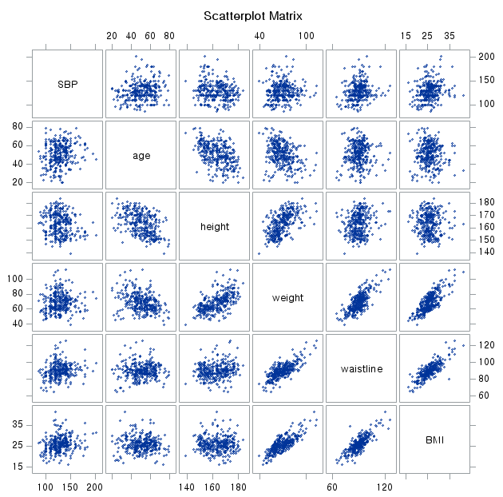
proc corr data=healthdata plots=matrix;
var sbp age height weight waistline bmi;
run;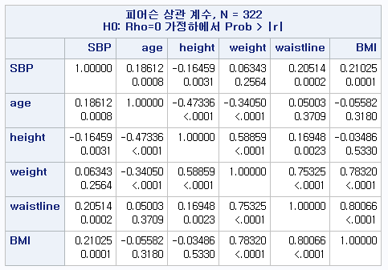
ods graphics on;
proc reg data=healthdata plots=residuals plots=QQ;
model sbp=age height weight waistline bmi/stb dw dwprob influence vif;
run;
ods graphics off;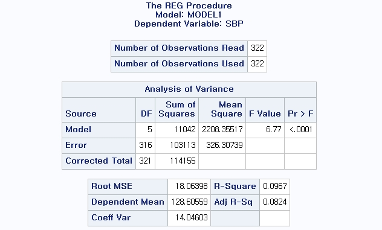
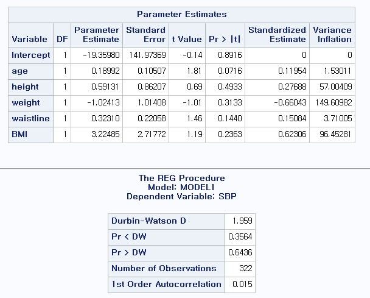
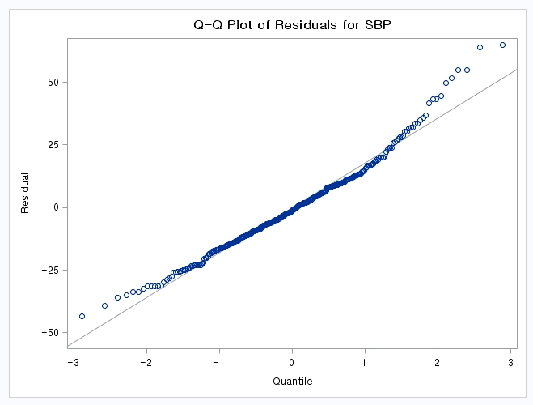
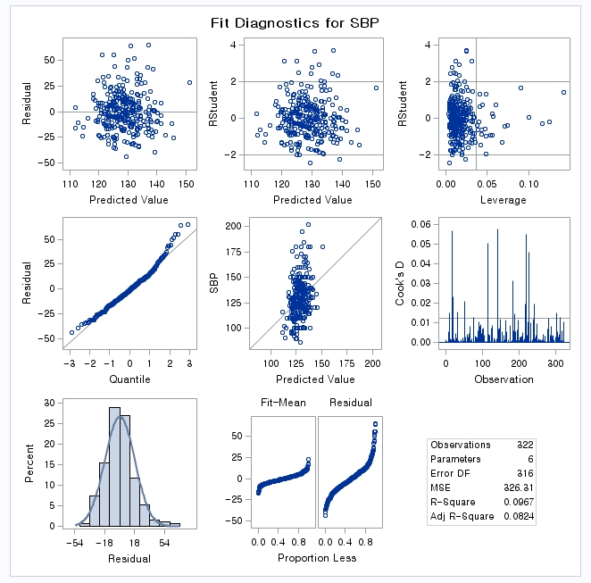
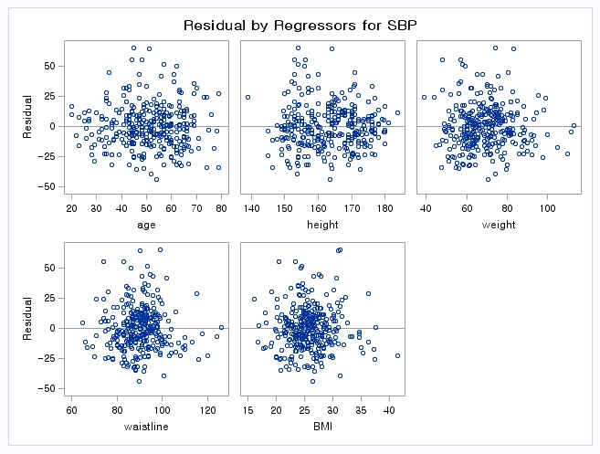
- 단계적 선택법을 사용하는 경우
ods graphics on;
proc reg data=healthdata plots=diagnostics(stats=(default aic bic)) plots=QQ;
model sbp=age height weight waistline bmi/selection=stepwise stb dw dwprob influence vif sle=0.1 sls=0.05;
run;
ods graphics off;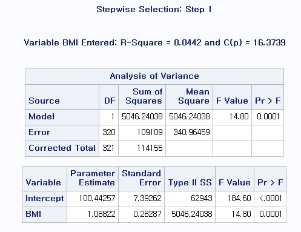
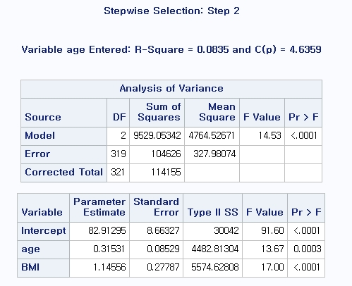
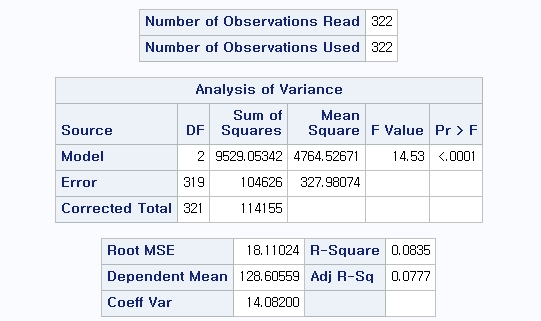
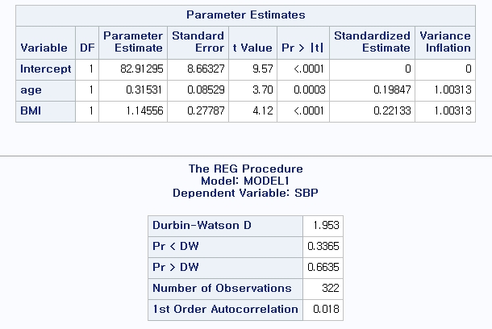
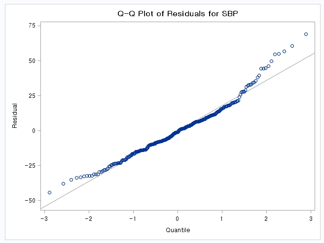
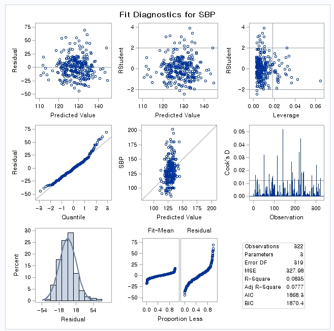
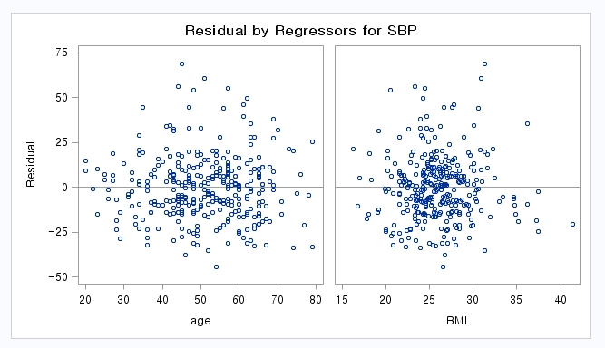